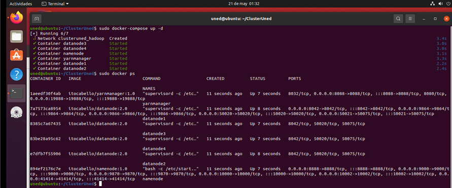
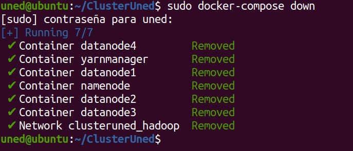

Capítulo 4. Arquitectura de Contenedores para el Despliegue del Entorno Big Data
Arquitectura de Contenedores para el Despliegue del Entorno Big Data
Arquitectura de Contenedores para el Despliegue del Entorno Big Data
Una vez desplegada la infraestructura Big Data, resulta necesario disponer de mecanismos que permitan administrar y supervisar el estado de los distintos contenedores que forman el clúster Hadoop.
Docker proporciona un conjunto de herramientas que facilitan las tareas de gestión, monitorización y mantenimiento de los servicios desplegados, permitiendo comprobar el estado de los nodos, acceder a los contenedores, consultar registros, reiniciar servicios o detener completamente la infraestructura cuando sea necesario.
Docker permite comprobar rápidamente el estado de ejecución de todos los contenedores mediante los siguientes comandos.
sudo docker ps
sudo docker-compose ps

Figura 25. Estado de los contenedores del clúster.
Cuando resulta necesario modificar configuraciones, ejecutar comandos Hadoop o realizar tareas de administración, puede accederse directamente al interior de cualquier contenedor utilizando el siguiente comando.
sudo docker exec -it nombre_contenedor /bin/bash
Figura. Acceso interactivo al contenedor NameNode.
Docker registra toda la actividad generada por cada servicio del clúster. La consulta de estos registros resulta especialmente útil para localizar errores o verificar el correcto funcionamiento de Hadoop.
docker logs namenode
docker logs -f namenode
La arquitectura desarrollada permite ampliar fácilmente el número de DataNodes simplemente añadiendo nuevas definiciones del servicio correspondiente en el archivo docker-compose.yml.
docker ps
hdfs dfsadmin -report
yarn node -list
Docker Compose permite controlar fácilmente el ciclo de vida completo del clúster.
| Operación | Comando |
|---|---|
| Detener servicios | docker-compose stop |
| Reiniciar servicios | docker-compose restart |
| Eliminar contenedores | docker-compose down |
| Eliminar contenedores y volúmenes | docker-compose down -v |

Figura 26. Eliminación de la infraestructura Docker.
La infraestructura incorpora un archivo adicional denominado docker-compose-dbcluster.yml, encargado de desplegar un contenedor MySQL que proporciona persistencia de datos al laboratorio Big Data.
Antes de iniciar este servicio es recomendable completar el apartado "Acceso mediante Jupyter Notebook", donde se generan los archivos CSV mediante Python que posteriormente serán importados a la base de datos MySQL para su explotación mediante Hadoop y Hive.
sudo docker-compose-dbcluster up -d
Docker proporciona un conjunto muy completo de herramientas para administrar la infraestructura Big Data desarrollada en este proyecto. Gracias a ellas es posible supervisar el estado de los servicios, acceder a los contenedores, consultar registros, ampliar el número de nodos y gestionar el ciclo de vida del clúster de forma sencilla y eficiente.